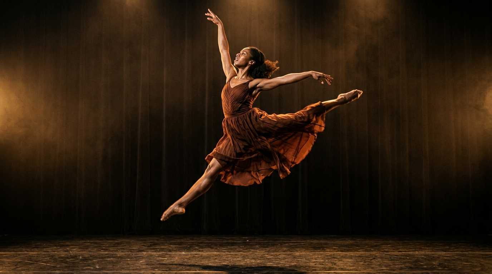
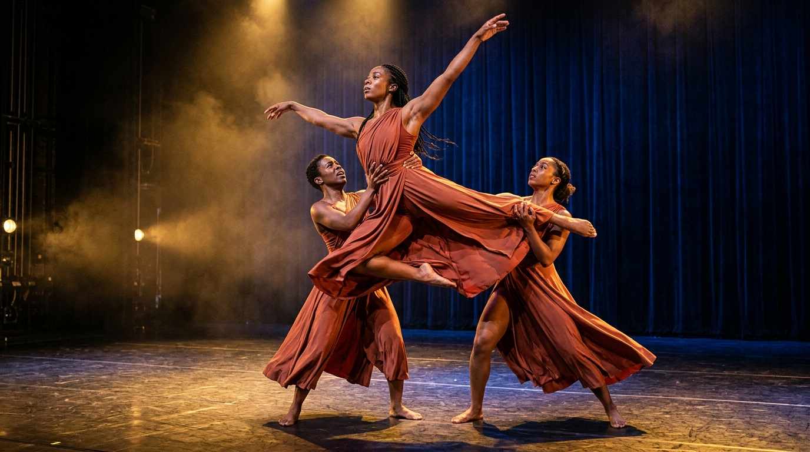
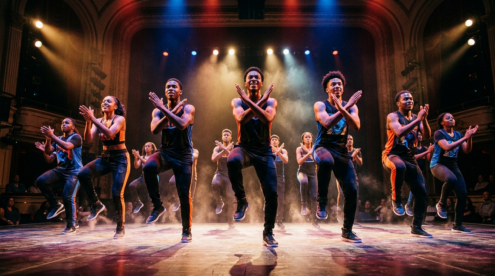
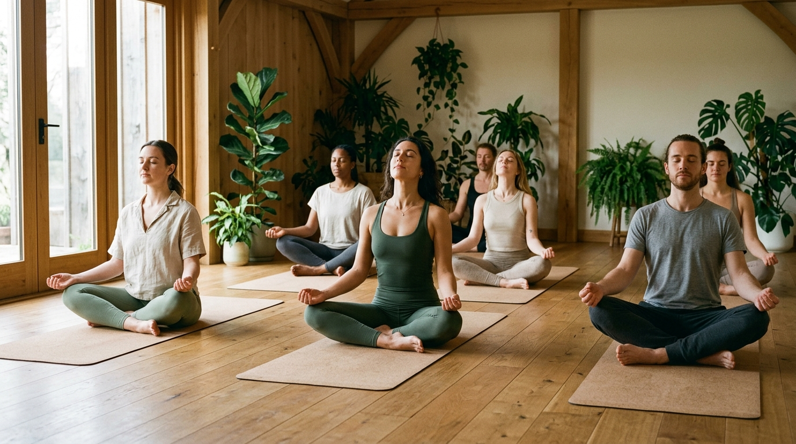
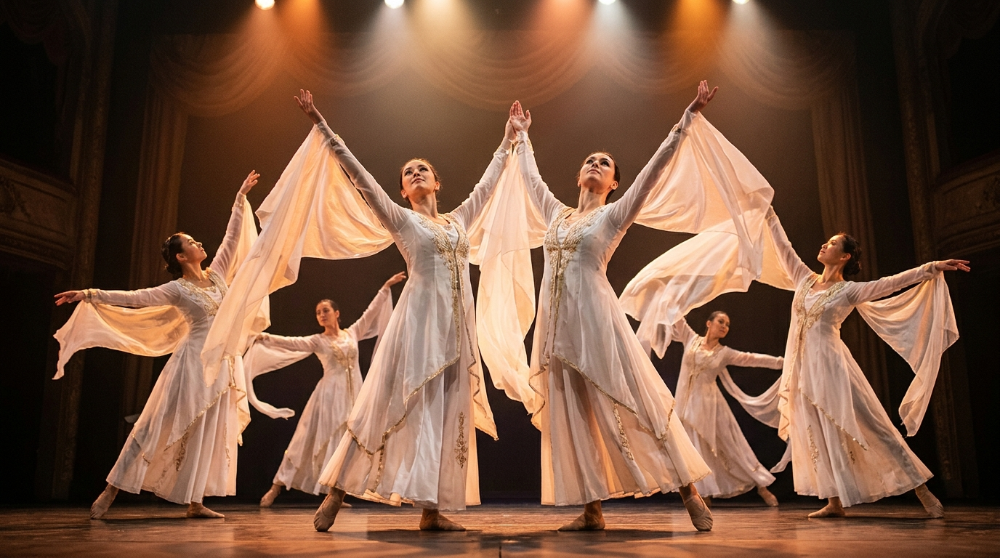
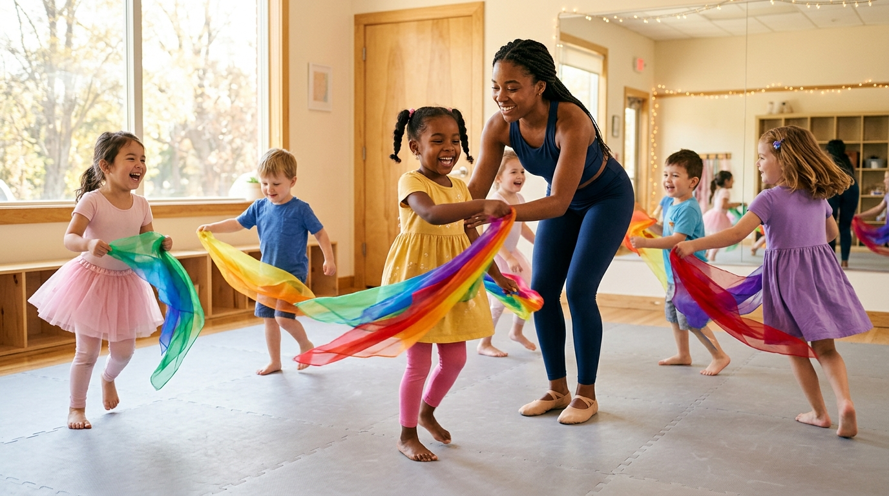
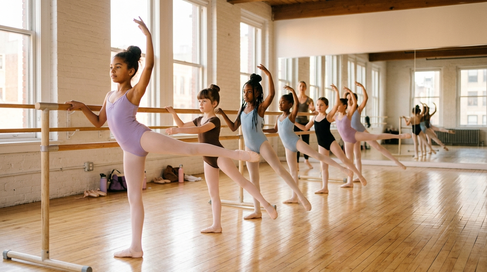
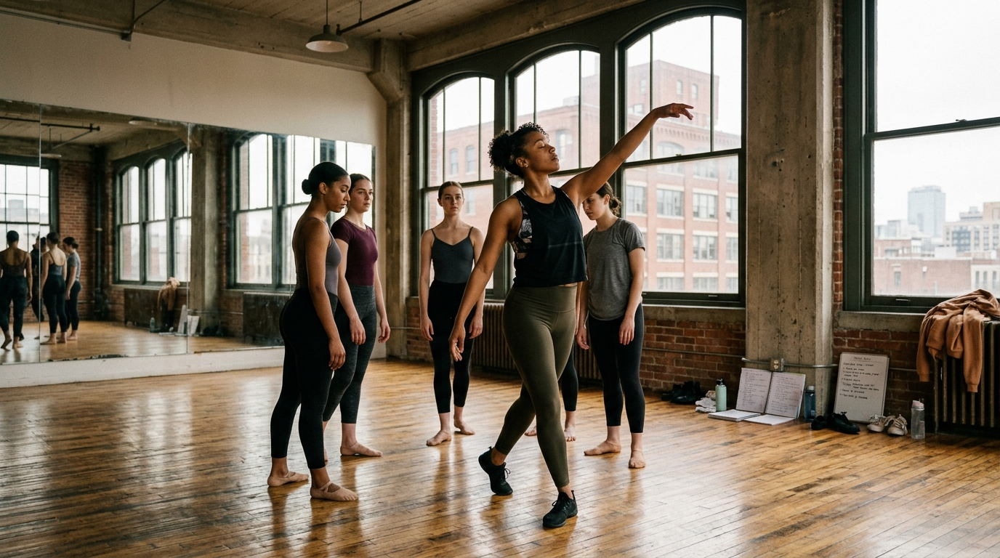
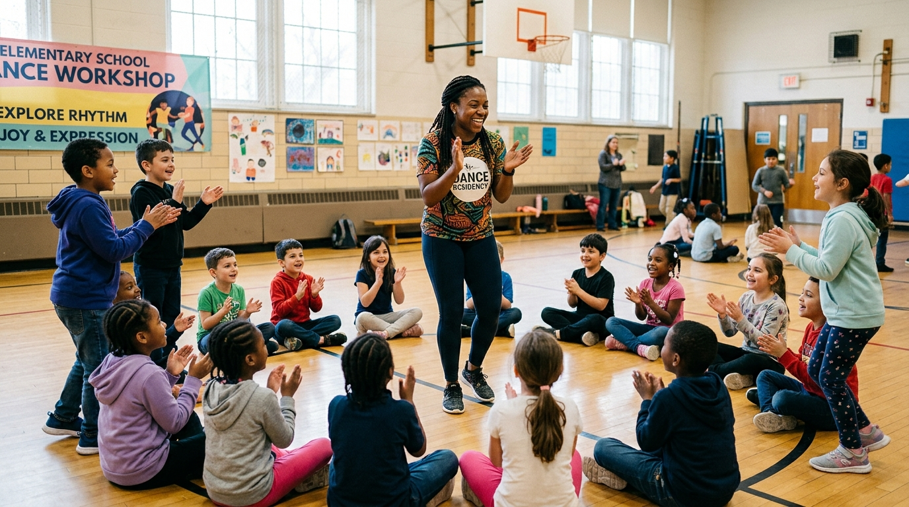
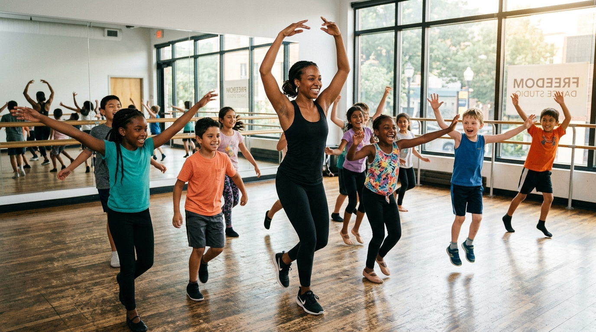

Choreography Showcase
Capturing the dynamic energy and precision of Phe-be Smith's choreography and teaching pedagogy.

Teaching artist, choreographer, and youth empowerment specialist blending the sculptural grace of Alvin Ailey, the rhythmic fire of street jazz, and the analytical power of movement science to transform young lives.
"Dance is not simply learning steps—it is claiming your voice, inhabiting your dignity, and discovering the boundless strength within your body."
For Phe-be Smith, the dance studio has always been far more than a rehearsal room—it is a sacred sanctuary where young people discover who they are, shed fear, and build lifelong resilience.
Trained rigorously in classical ballet, Lester Horton and Martha Graham modern techniques, West African diaspora rhythms, and urban street vernaculars, Phe-be has dedicated her career to bringing world-class arts pedagogy into public schools, community academies, faith ministries, and premier concert stages.
Empowering youth to stand tall, claim stage space, and speak boldly through expressive physical posture.
Reframing rigorous rehearsal not as restriction, but as the golden key that unlocks complete creative freedom.
Connecting contemporary steps to African diaspora roots, jazz histories, and universal human stories.
Nurturing holistic physical health, emotional regulation, and deep empathy that extends far beyond the dance floor.
Phe-be integrates STEM principles, kinesiology, and Social-Emotional Learning (SEL) into every class—proving that the human body is an exquisite laboratory of physics, rhythm, and emotional expression.
Students do not merely jump—they learn how ground reaction force, center of gravity, and torque create effortless suspension. By understanding musculoskeletal levers, young dancers achieve greater technical height while protecting developing joints.

Music and choreography are rich applications of fractions, spatial ratios, and syncopated time divisions. In step, tap, and street jazz, students master complex cross-rhythms (3 against 4, 6/8 to 4/4 shifts) while charting geometric stage pathways.

Dance is neurological co-regulation. Through diaphragmatic breath cycles, grounding circles, and restorative somatic alignment, students release academic stress, calm fight-or-flight responses, and build emotional vocabulary.

Every movement has an origin story. Phe-be educates dancers on the living lineages of West African ring dances, jazz innovators like Katherine Dunham and Alvin Ailey, and urban pioneers who shaped hip-hop and step culture.

From early childhood motor development to pre-professional masterclasses, each program is carefully scaffolded with age-appropriate milestones, safety protocols, and artistic inspiration.

Ages 3 – 5Fostering imaginative storytelling, gross motor agility, balance, and joyful social collaboration through rhythm, silk props, and playful music.
 Ages 6 – 18 & Adult
Ages 6 – 18 & Adult
High-voltage polyrhythms, syncopated bounce, isolations, breaking basics, and urban choreography paired with freestyle cypher confidence.
Rooted in Alvin Ailey, Horton fortifications, and Graham contractions. Teaches sculptural body lines, floor suspensions, and profound emotional narratives.

Ages 5 – AdultAnatomically safe classical training emphasizing core stabilization, postural alignment, turnout mechanics, and graceful port de bras for all body types.
Transforming the body into an acoustic instrument. Intricate stomping cadences, sharp synchronized team drills, and mathematical rhythmics.
Spiritual choreography blending contemporary lyrical movement, billowing silk banners, and scriptural narratives for churches and sacred concerts.
Nervous system regulation, diaphragmatic breathwork, spinal mobility flows, and joint protection for long-term health and focus.

Educators & Pre-ProsCustom residencies for public school districts, university dance departments, and private studios on culturally sustaining dance pedagogy.

K-12 AssembliesMulti-week dance and youth empowerment residencies integrated directly into physical education, humanities, and after-school programs.
Rather than a rigid checklist, Phe-be orchestrates a 4-phase pedagogical journey in every session—scaffolding emotional safety, technical mastery, individual creative voice, and communal celebration.
Every class begins seated together. Students check in emotionally, set a communal intention, and engage in breathwork to leave outside distractions at the studio door.
SEL: Emotional Check-InProgressive biomechanical conditioning. From barre alignments to Horton fortifications and polyrhythmic drills, students master precision through positive feedback.
STEM: Musculoskeletal FormStudents apply technique to original choreography or guided improvisation. They are challenged to create their own 8-counts, collaborate with peers, and express real stories.
Creativity: Youth ChoreographyClass concludes with a supportive cypher circle. Dancers perform for one another, practice constructive peer critique, and close with collective gratitude and applause.
Confidence: Peer AffirmationToddlers (age 3) through high school seniors, pre-professional college dancers, public school classrooms, and adult community movers of all abilities.
High expectations wrapped in unconditional love. Zero tolerance for mockery; high celebration of courage, effort, and authentic self-expression.
Enhanced school attendance, heightened academic focus, decreased social anxiety, superior spatial posture, and lifelong artistic pride.
Phe-be’s choreographic voice fuses theatrical drama, African diaspora rhythms, contemporary lyricism, and poignant youth narratives into unforgettable concert experiences.
A moving contemporary piece exploring youth mental health, perseverance, and mutual uplift. Combines dynamic floorwork suspensions with synchronized body percussion.
Drawing inspiration from Alvin Ailey's 'Revelations', this work celebrates historical memory, sacred resilience, and cultural liberation through fluid contemporary lines.
An explosive celebration of youth creativity featuring synchronized step routines, street jazz isolations, and theatrical staging portraying a bustling metropolis.
Created to inspire communal healing and spiritual uplift, this piece weaves flowing silk fabrics into cathedral-like stage architectures of light and devotion.
Scientific studies confirm what Phe-be witnesses every day: structured dance education accelerates cognitive processing, reduces behavioral friction, and builds empathetic youth leaders.
Explore photos, rehearsal footage, and stage highlights from Phe-be’s career as an educator, choreographer, and performing artist.

Catch behind-the-scenes rehearsal labs, student choreography cyphers, and community dance ministry clips.
Celebrating key teaching fellowships, choreographic commissions, educational awards, and major youth arts productions throughout Phe-be’s storied career.
Authoring accredited K-12 movement curriculums that blend STEM kinematics with culturally responsive pedagogy across 18 public school districts.
Awarded by the Creative Arts Foundation for pioneering trauma-informed dance residencies in underserved urban communities.
Commissioned full-length 20-performer suite featured at major regional performing arts festivals to standing ovations and critical praise.
Pioneered interactive virtual and hybrid movement modules that taught mathematical rhythmics and kinesiology to over 2,500 students during remote learning.
Featured performer and guest teaching artist across national masterclasses, liturgical conferences, and Broadway-affiliated youth showcases.
Real reflections on the lasting personal and artistic impact of learning with Phe-be Smith.
"Phe-be has an extraordinary gift for seeing the brilliance in every single child. My daughter walked in shy and withdrawn, and walked out holding her head high, proud of her heritage and thrilled to dance."
"In 22 years of school administration, I have never seen a teaching artist captivate 300 middle schoolers in a gymnasium with such profound discipline, infectious joy, and educational depth."
"Phe-be's choreography gave our liturgical ministry a whole new level of spiritual excellence. She didn't just teach us steps; she taught us how to minister with authenticity and reverence."
Whether booking an in-school residency, commissioning a signature choreography, or scheduling a masterclass weekend, let's create something extraordinary together.
Phe-be Smith travels nationally and internationally for educational residencies, choreographic commissions, masterclasses, and youth development keynotes.